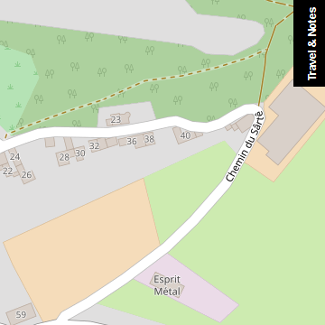
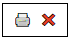
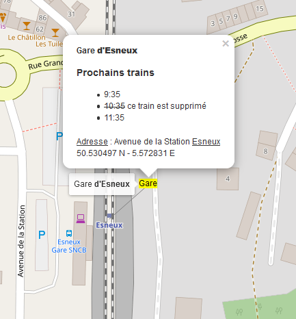

dans le bas de l'interface
dans le bas de l'interfaceJe pars de temps en temps en voyage en vélo pour plusieurs semaines, parfois dans des régions isolées. Ce genre de voyage ne s'improvise pas, même si il y a toujours une part d'imprévu. Il me fallait un outil pour préparer mon itinéraire à partir de la carte et pouvoir y ajouter des notes.
Oui, je sais, il y a des tas d'applications qui permettent de faire un itinéraire d'un point à un autre, mais aucune ne me donne vraiment satisfaction: je ne cherche pas souvent le trajet le plus court - parfois il s'agit même d'un trajet circulaire - et en général on est limité à quelques centaines de kilomètres.
En final , il est aussi important de pouvoir enrégistrer ce qui a été préparé car cela ne se fait pas en quelques minutes.Il faut aussi pouvoir imprimer le résultat. Dans certaines région isolées, il n'y a pas toujours de réseau mobile ni de possibilité de recharger une batterie. Une bonne vieille copie papier est souvent précieuse.
Un trajet relie deux points. Sur la carte, il est représenté par une polyligne.
Un itinéraire est la description des différents changements de direction nécessaires pour parcourir le trajet. Chaque changement de direction est une manœuvre.
Un voyage est constitué de un ou plusieurs trajets. Ceux-ci ne doivent pas obligatoirement se toucher à leur extrémités. Il peut également y avoir plus de deux trajets partant d'un même point.
Dans un voyage, certains trajets peuvent être chainés entre eux. Dans ce cas les différents trajets chainés seront considérés comme n'en faisant qu'un seul pour le calcul des distances. Une seule chaine peut-être créée par voyage, mais il n'est pas obligatoire que tous les trajets soient inclus dans la chaine.
Une note est un ensemble d'informations qui concerne un point précis sur la carte ou sur un trajet. Une note est composée d'une icône, d'un 'tooltip', d'un texte libre, d'une adresse, d'un lien et d'un numéro de téléphone. Aucune de ces informations n'est obligatoire, à l'exception de l'icône, qui est utilisée pour représenter la note sur la carte. Cette icône peut être une image, une photo, un texte...
Le livre de voyage est une page HTML qui regroupe toute l'information du voyage: les notes, les trajets et les itinéraires.
ATTENTION : Il n'est pas possible d'ouvrir avec une version 1.x.x un fichier sauvé avec la version 2.0.0
Il est possible que vous ayez encore besoin de la version antérieure pour faire des corrections dans les notes. Vous pouvez faire deux installations de Travel & Notes sans problème. Il suffit de les placer dans des répertoires différents.
Si vous utilisez Travel & Notes uniquement pour créer des notes, vous pouvez ignorer toute la partie qui concernent les clefs d'accès. Celles-ci ne sont utilisées que pour le calcul des trajets et l'affichage de certaines cartes.
Travel & Notes ne calcule pas lui-même les itinéraires des trajets. Il se connecte chez un fournisseur d'itinéraires pour obtenir cet itinéraire. Les différents fournisseurs d'itinéraire qu'il est possible d'utiliser actuellement sont GraphHopper, Stadia Maps, Mapbox, OpenRouteService et OSRM. Il est également possible de tracer une polyligne entre deux endroits, sans suivre de chemins. Un itinéraire en train entre deux gares peut aussi être ajouté, à condition que cet itinéraire soit encodé dans Openstreetmap, en respectant les règles des transports publics version 2.
Pour GraphHopper, Stadia Maps, OpenRouteService et Mapbox il est nécessaire de posséder une clef d'accès ( API Key ) pour se connecter au serveur. Consultez les sites internet de ces différents fournisseurs pour obtenir une clef d'accès.
Pour l' affichage de certaines cartes (Thunderforest, Lantmäteriet - Suède, Mapbox), une clef d'accès est également indispensable. Pour d'autres cartes, ce n'est pas nécessaire (OpenStreetMap, vue aérienne ESRI, IGN - Belgique, Kartverket - Norvège, Maanmittauslaitos - Finlande).
Vous devez également lire correctement les conditions d'utilisation des clefs d'accès et vérifier que ce que vous faites avec Travel & Notes correspond à ces conditions d'utilisation.
Vous êtes également responsable de l'utilisation qui est faite de vos clefs d'accès. N'oubliez pas qu'il peut y avoir une facturation qui est faite sur la base de ces clefs d'accès. Ne les donnez pas à n'importe qui, ne les laissez pas trainer n'importe où.
Les clefs d'acc√®s sont g√©r√©es √† partir de la boite de dialogue des clefs d'acc√®s. Pour afficher celle-ci, cliquez sur le bouton üîë dans la barre d'outil en haut de l'interface.
Pour chaque fournisseur de service, vous devez indiquer à gauche le nom de ce fournisseur et à droite la clef d' accès. Les différents noms possibles actuellement sont 'GraphHopper', 'Lantmateriet', 'Mapbox', 'MapzenValhalla', 'OpenRouteService' et 'Thunderforest' (insensibles au majuscules/minuscules).
Utilisez le bouton + pour ajouter un fournisseur de service et le bouton ❌ à droite pour supprimer celui-ci.
Quand vos clefs d'acc√®s sont introduites, appuyez sur le bouton üÜó pour terminer. Vos clefs sont sauvegard√©es dans le "sessionStorage" du browser et disponibles jusqu'√† la fermeture de l'onglet.
Il est possible de sauvegarder les clefs d'accès dans un fichier, protégé par un mot de passe ou non protégé.
Attention: la page doit être servie en HTTPS pour sauvegarder dans un fichier protégé par un mot de passe.
Le bouton üîÑ permet de recharger le fichier des clefs d'acc√®s depuis le serveur web, si un fichier a √©t√© trouv√© pr√©c√©demment sur le serveur.
Le bouton üíæ √† gauche de la boite de dialogue permet de sauver les clefs d'acc√®s dans un fichier prot√©g√© par mot de passe. Celui-ci doit contenir au moins 12 caract√®res dont au moins une majuscule, une minuscule, un chiffre et un autre caract√®re.
Le bouton üìÇ √† gauche de la boite de dialogue remplace toutes les clefs d'acc√®s de la boite de dialogue par le contenu d'un fichier prot√©g√© par mot de passe.
Ces deux boutons ne sont présents que si toutes les conditions pour pouvoir sauvegarder/restaurer les clefs avec un mot de passe sont réunies.
Le bouton üíæ √† droite de la boite de dialogue permet de sauver les clefs d'acc√®s dans un fichier non prot√©g√© par mot de passe.
Le bouton üìÇ √† droite de la boite de dialogue remplace toutes les clefs d'acc√®s de la boite de dialogue par le contenu d'un fichier non prot√©g√© par mot de passe.
Ces deux boutons ne sont présents que si ils ont été activés dans le fichier TravelNotesConfig.json.
Si un fichier protégé par un mot de passe et nommé APIKeys est placé dans le même répertoire que Travel & Notes sur le serveur, Travel & Notes vous demandera le mot de passe à l'ouverture pour pouvoir utiliser les clefs contenues dans ce fichier.
Pour les geeks et les paranos voyez aussi ,dans le guide d'installation et dans le fichier TravelNotesConfig.json:
L'ancienne méthode consistant à introduire les clefs d'accès via l'url est supprimée.
Tous les objets de la carte (points de passage, notes, trajets, carte) ont un menu contextuel. Toutes les commandes relatives à ces objets se trouvent dans ces menus contextuels.
Les mêmes menus se retrouvent dans l'interface utilisateur à droite de l'écran. Un clic droit sur une route dans la liste des routes affichera un menu contextuel pour cette route, un clic droit sur une note dans la description de l'itinéraire ou dans la liste des notes de voyage affichera un menu contextuel pour cette note et un clic droit sur une manœuvre dans la description de l'itinéraire affichera un menu contextuel pour cette manœuvre.
Lorsque la carte s'affiche, seul un petit rectangle noir est est visible dans le coin supérieur droit de la carte:
Déplacez la souris sur ce rectangle pour voir l'interface complète:

En haut de l'interface se trouve une première barre d'outils:
Dans cette boite d"édition vous pouvez donner un nom au voyage. Ce nom sera par la suite proposé comme nom par défaut pour tous les fichiers que vous créerez à partir de ce voyage. Il est nécessaire de donner un nom au voyage avant de pouvoir sauver celui-ci.
Dans cette partie, les différents trajets du voyage sont affichés.
Pour chaque trajet, un clic droit sur celui-ci affiche un menu contextuel contenant des commandes qui permettent de faires des opérations sur le trajet.
Il est aussi possible de faire du glisser / déposer pour réordonner les différents trajets.
Lorsque un trajet est en cours de modification, une ic√¥ne üî¥ est pr√©sente √† gauche de celui-ci. De m√™me, Lorsque un trajet est chain√©, une ic√¥ne ‚õì est pr√©sente √† gauche.
Par défaut, le nom d'un trajet est le nom et l'adresse du point de départ suivi de ⮞ suivi du nom et de l'adresse du point d'arrivée. Il est possible de modifier ce nom en sélectionnant la commande 'Modifier les propriétés de ce trajet' dans le menu contextuel.
Cette partie comprend les manœuvres de l'itinéraire ainsi que les notes liées au trajet. Vous pouvez choisir ce que vous désirez voir en cochant les notes et / ou les manœuvres
Lorsque la souris est placée sur une ligne de l'itinéraire, un marqueur est affiché à cet endroit sur la carte.
Un clic droit sur une ligne de l'itinéraire affichera un menu contextuel avec des commandes qui permettent de faires des opérations sur la manœuvre ou la note.
Dans cette partie, il est possible de rechercher des points d'intérêts (POI) dans OpenStreetMap. Une barre d'outils est affichée dans le haut et ensuite une liste arborescente permettant de choisir les POI à rechercher est affichée.

La liste arborescente peut être facilement modifiée et adaptée à vos besoins. Voir le guide d'installation.
S√©lectionnez le type de POI √† rechercher dans la liste arborescente et ensuite cliquez sur le bouton üîé. Apr√®s quelques instants, les r√©sultats sont affich√©s:
Déplacez la souris sur un des résultats. Celui-ci sera affiché sur la carte, de même que un tooltip avec tous les tags introduits dans OpenStreetMap.
Un clic droit sur un des résultats montrera un menu contextuel permettant de créer des notes avec ce résultat ou de choisir ce résultat comme point de passage pour l'itinéraire en cours d'édition.
La zone de recherche est limitée à la carte affichée sur l'écran avec un maximum de 10 km sur 10 km.
Lorsque le panneau "Rechercher dans OpenStreetMap" est activé, un carré rouge montrant les limites de la prochaine recherche est affiché à l'écran. Le carré vert montre les limites de la recherche précédente.
Les différents modes de parcours (vélo, piéton, voiture,train ou ligne) ainsi que les différents fournisseurs d'itinéraires sont sélectionnés sur cette barre d'outils.

Les boutons bleus à gauche permettent de sélectionner le mode de parcours, les autres boutons sélectionnent les fournisseurs d'itinéraire.
Seuls les boutons utilisables sont visibles dans la barre d'outils:
Parfois, une boite d'édition peut masquer un objet de la carte que l'on désire consulter. Il est toujours possible, soit de déplacer / modifier la carte avec un zoom ou un pan, soit de glisser / déposer la boite d'édition en la saississant par la barre dans la partie supérieure.
Pour ajouter, modifier ou supprimer des points de passage, il est nécessaire d'éditer le trajet depuis l'interface ou via le menu contextuel du trajet si celui-ci existe déjà.
Les autres modifications (notes, propriétés du trajet) peuvent se faire, que le trajet soit édité ou non.
Pour créer un point de passage, faites un clic droit sur la carte à l'endroit souhaité et choissisez "Sélectionner cet endroit comme point de départ", "Sélectionner cet endroit comme point intermédiaire" ou "Sélectionner cet endroit comme point d'arrivée" dans le menu:
Une icône verte (pour le point de départ), orange (pour un point intermédiaire) ou rouge (pour le point de fin) est ajoutée à la carte à l'endroit choisi.
Un point intermédiaire ajouté via le menu contextuel sera toujours ajouté à la fin de la liste des points intermédiaires.
Amenez la souris sur le trajet pour voir apparaître un point de passage temporaire gris. En faisant ensuite un glisser / déposer de celui-ci, le point de passage est ajouté au trajet.

Faites un glisser / déposer du point de passage sur la carte pour modifier un point de passage
Faites un clic droit sur le point de passage et choisissez "supprimer ce point de passage" dans le menu. Il n'est pas possible de supprimer le point de départ ni le point de fin. Seul un glisser / déposer est possible.
Quand un point de passage est créé, son adresse est recherchée avec Nominatim. Si un nom, tel que un nom de magasin ou d'immeuble est trouvé par Nominatim, celui-ci sera également ajouté ( voir wayPoint.geocodingIncludeName dans le fichier TravelNotesConfig.json pour désactiver cette possibilité ).
Vous pouvez modifier ce nom et cette adresse en faisant un clic droit sur le point de passage et en sélectionnant "Modifier les propriétés de ce point de passage" dans le menu contextuel.
À noter cependant que chaque fois que le point de passage est déplacé, le nom et l'adresse seront modifiés par Nominatim et vos modificatons perdues. Il vaut donc mieux faire ces changements quand vous êtes certain de ne plus déplacer ce point de passage.
Utilisez les boutons dans le bas du contrôle pour modifier le mode de déplacement (vélo, piéton, voiture ou train) ainsi que le fournisseur de trajet.
Lorsque le point de départ et le point de fin sont connus, l'itinéraire est calculé et affiché sur la carte. Il en est de même chaque fois qu'un point intermédiaire est ajouté ou qu'un point de passage est déplacé.
La description de l'itinéraire est également affichée dans la partie "Itinéraire et notes".
Lorsque l'édition d'un trajet est terminée, il faut sauver celle-ci. Faites un clic droit sur le trajet et sélectionnez 'Sauver les modifications de ce trajet' dans le menu contextuel.
Il est également possible d'abandonner l'édition d'un trajet et de revenir à la situation avant modifications avec la commande 'Abandonner les modifications de ce trajet'. Attention, toutes les modifications seront perdues, y compris les propriétés modifiées et les notes ajoutées depuis le début de l'édition.
Lorsque un trajet est calculé avec GraphHopper ou OpenRouteService, il est possible d'afficher un profil de ce trajet. Faites un clic droit sur le trajet et sélectionnez "Voir le profil du trajet" dans le menu contextuel.
Il peut y avoir plusieurs fenêtres affichant des profils ouvertes.
Il est possible de déplacer un profil sur l'écran en faisant un glisser/déposer de la barre supérieure de la fenêtre.
dans le bas de l'interface
et s√©lectionnez le train correspondant au trajet souhait√© et terminez en cliquant sur le bouton üÜó.
Notez que, en fonction des points choisis, le résultat sur la carte peut être une ligne, un arc de cercle ou une partie de sinusoïde, mais dans tous les cas ce sera la représentation d'une portion de grand cercle sur le globe terrestre ( = le plus court chemin entre les deux points).

 .
.Ici aussi, le résultat peut être une ellipse, un rectangle ou une sinusoïde mais dans tous les cas ce sera la représentation d'un cercle sur le globe terrestre.
Faites un clic droit sur le trajet et sélectionnez "Modifier les propriétés de ce trajet" dans le menu contextuel.
Vous pouvez tout d'abord modifier les noms du trajet et remplacer le nom proposé par le programme par un nom de votre choix.
Notez que quand le nom a été modifié, les adresses ne seront plus ajoutées au nom, même si vous modifiez les points de départ et d'arrivée.
Il est également possible de modifier la largeur du trajet ainsi que le type de ligne et également chainer le trajet au voyage.
Enfin vous pouvez modifier la couleur utilisée pour afficher le trajet. Sélectionnez une couleur parmi les 6 rangées de boutons de couleur. La tirette sous les boutons de couleur ajoute plus ou moins de nuance de rouge dans les couleurs proposées.
Chaque nuance de rouge, vert et bleu pour la couleur désirée peut également être réglée individuellement via les 3 zones d'édition des couleurs.
Attention: cette commande est expérimentale. Elle peut ne pas fonctionner avec votre installation de Travel & Notes si vous avez ajouté d'autres éléments à la page. De plus, les browsers ne réagissent pas tous de la même façon aux balises css, spécialement celles qui imposent un saut de page à l'impression.
Si cette commande ne vous convient pas, vous pouvez la désactiver à partir du fichier TravelNotesConfig.json (printRouteMap.isEnabled). Voir le guide d'installation.
Faites un clic droit sur le trajet pour lequel vous voulez imprimer les cartes et sélectionnez "Imprimer les cartes de ce trajet" dans le menu contextuel.
La boite d'édition est affichée:
"Largeur du papier" et "hauteur du papier": il s'agit de la largeur et hauteur de la zone imprimable du papier. Vous devez contrôler celle-ci avec votre imprimante.
"Dimension de la marge": c'est une zone autour de la carte et à l'interieur de celle-ci qui sera réimprimée dans la carte suivante.
"Zoom" : le zoom à utiliser pour les cartes. Il est indépendant du zoom utilisé pour afficher la carte avant le lancement de la commande. Pour des raisons de performance des serveurs de tuiles, il n'est pas possible d'utiliser un zoom plus grand que 15.
"Imprimer les notes du trajet" quand cette case est cochée, l'icône des notes est imprimée sur la carte.
Enfin, sélectionnez le browser que vous utilisez (soit Firefox, soit un autre browser basé sur Chrome). Ce choix est important : la carte peut être mal découpée en bas de page dans le cas d'un mauvais choix.
Lorsque la boite d'édition est fermée avec le bouton "ok", la carte et les contrôles sont remplacés par des vues de la carte qui ont les dimensions souhaitées et deux boutons sont présents en haut à droite:
Le bouton üñ®Ô∏è lancera la commande d'impression de votre browser et le bouton ‚ùå annulera l'impression et r√©affichera la carte.
Lorsque la commande d'impression du browser est fermée, les vues d'impression seront également fermées et la carte réaffichée.
Toutes les valeurs par défaut de la boite d'édition peuvent être modifiées dans le fichier TravelNotesConfig.json. Voir le guide d'installation.
Évitez de surcharger les serveurs de tuiles. Ne lancez cette commande que si vous en avez réellement besoin. Diminuer les dimensions du papier, la dimension de la marge et le zoom diminuera également le nombre de tuiles nécessaires.
Lorsque la boite d'édition est fermée, le programme calcule le nombre de tuiles nécessaires. Si ce nombre est trop important, la commande est arrêtée.
@page {
size: A4 landscape;
margin: 7mm;
}
Il y a deux sortes de notes: les notes de voyage et les notes de trajet. La position des notes de voyage est totalement libre et elles seront toutes affichées au début du livre de voyage. Les notes de trajet sont toujours positionnées sur un trajet et affichées avec l'itinéraire dans le livre de voyage.
Faite un clic droit à l'endroit souhaité sur la carte et sélectionnez "Ajouter une note de voyage" dans le menu contextuel.
L'ordre des notes de voyage peut se modifier en faisant du glisser / déposer dans la liste des notes de voyage de l'interface utilisateur.
Faite un clic droit à l'endroit souhaité sur le trajet et sélectionnez "Ajouter une note à ce trajet" dans le menu contextuel.
Faites un clic gauche sur l'icône de la note.
Faites un clic droit sur l'icône de la note et sélectionnez "Éditer cette note" dans le menu contextuel.
Faites un clic droit sur l'icône de la note et sélectionnez "Effacer cette note" dans le menu contextuel.
Faites un glisser / déposer de la note. Une ligne sera tracée entre l'icône de la note et le point choisi pour l'insertion de la note. La latitude et longitude de la note ne sont pas modifiées.
Déplacez l'icône de la note pour que la ligne soit visible. Déplacez la souris près de l'extrémité de la ligne. Lorsque un petit carré noir apparait sur celle-ci, faites un glisser / déposer de ce carré et de la ligne.
Une note de trajet a toujours sa latitude et longitude sur le trajet. Lorsque la ligne est déposée, le point le plus proche sur le trajet est recherché et l'extrémité libre de la ligne déplacé vers ce point.
Faites un clic droit sur l'icône de la note et sélectionnez "Transformer en note de voyage" dans le menu contextuel. La transformation n'est possible que si aucun trajet n'est en cours d'édition.
Faites un clic droit sur l'icône de la note et sélectionnez "Transformer en note de trajet" dans le menu contextuel. La transformation n'est possible que si aucun trajet n'est en cours d'édition. La note sera attachée au trajet le plus proche de celle-ci.
Faites un clic droit sur le trajet et sélectionnez "Créer une note pour chaque manœuvre du trajet" dans le menu contextuel. Une demande de confirmation est affichée. Pour chaque manœuvre du trajet, une note en SVG à partir des données OpenStreetMap sera créée.

Dans le haut de la boite, une liste déroulante permet de choisir des notes prédéfinies. Il est possible de modifier cette liste. Consultez le guide d'installation.
Le bouton ▼ cache ou affiche certaines zones d'édition qui sont masquées par défaut (les deux contrôles permettant de modifier les dimensions de l'icône et le n° de téléphone ). Il est possible de choisir quelles zones sont masquées par défaut. Consultez le guide d'installation
Le bouton üìÇ vous permet de charger votre propre fichier avec des notes pr√©d√©finies dans Travel & Notes. Consultez le guide d'installation. pour savoir comment cr√©er ce fichier.
Tous les autres boutons sont modifiables et permettent d'insérer des balises html ou du texte prédéfini dans les zones d'édition. Voir le guide d'installation.
La zone "Contenu de l'icône" sera utilisée pour représenter la note sur la carte et ne peut pas être vide (laisser cette zone vide empêcherait toute modification ultérieure de la note).
La zone "Adresse" est compl√©t√©e automatiquement lors de la cr√©ation de la note - Nominatim est utilis√© pour le nom de rue et OverpassAPI pour le nom de commune. Cette zone ne sera jamais modifi√©e par Nominatim par la suite, m√™me si la note a √©t√© d√©plac√©e. Le bouton üîÑ permet cependant de demander une nouvelle g√©olocalisation √† Nominatim/OverpassAPI.
Si la zone d'édition du téléphone contient seulement un numéro de téléphone valide (= commençant par un + et ensuite uniquement des chifres ou les caractères #, * ou espace), le numéro de téléphone sera affiché avec un lien tel: et un lien sms:.
Chaque zone d'édition peut contenir du texte simple ou du html, à l'exception de la zone "Lien" qui ne peut contenir qu'un lien valide.
Seules les balises html et attributs suivantes peuvent être utilisé·e·s:
En outre, les balises svg suivantes peuvent être utilisées:
Pour toutes les balises, les attributs id, class, dir et title peuvent également être utilisées.
Les règles d'édition du html sont bien sûr d'application:
Les url's introduits dans les attributs href et src, ainsi que dans la zone d'édition "lien" doivent être des url's valides:
Au fur et √† mesure que du texte est ins√©r√© dans une zone d'√©dition, l'apps interpr√®te celui-ci et adapte la pr√©visualisation de la note en cons√©quence. Lorsque la boite d'√©dition est ferm√©e avec le bouton üÜó, le texte que vous avez introduit est remplac√© par celui produit par l'interpr√©tation que l'apps en a fait.
Lorsque l'on crée une note de trajet, il est possible de choisir "Icône SVG depuis OSM" dans la liste des notes prédéfinies. Dans ce cas, Travel & Notes va rechercher dans Openstreetmap l'intersection la plus proche située sur le trajet et va créer une icône en SVG reprenant les rues proches de cette intersection.
L'intersection sera placée au centre de l'icône et le contenu de celle-ci sera orientée en fonction du trajet suivi: la route par laquelle on arrive à l'intersection sera tournée vers le bas de l'icône.
L'adresse sera également modifiée: tous les noms de rue trouvés à l'intersection seront indiqués, séparés par un symbole ⪥. Le premier nom de rue sera toujours celui par lequel on arrive à l'intersection et le dernier nom celui par lequel on quitte l'intersection. Ce nom sera précédé d'une flèche indiquant la direction à suivre. Le nom de la commune / ville sera également ajouté. Si un nom de hameau ou de village est trouvé à proximité de l'intersection, celui-ci sera également ajouté entre parenthèses.
La boite de dialogue:
Et le résultat dans TravelNotes:

Le trajet va de la droite vers la gauche. L'intersection des rues Tiyou d'Hestreu, Chemin des Patars et Basse Voie se trouve au centre de l'icône. Les rues sont orientées de telle sorte que une personne qui suit le trajet sur le terrain voit les rues dans la même position que sur l'icône. La rue par laquelle on arrive est le Tiyou d'Hestreu. Une flèche vers la droite indique qu'il faut tourner à droite dans la Basse Voie. Nous sommes dans la commune de Anthisnes et au hameau de Limont.
La boite de dialogue:

Et le résultat dans TravelNotes:
La boite de dialogue:

Et le résultat dans TravelNotes:

Lorsque un fichier .GPX est ouvert avec le bouton üìÇ ou import√© avec le bouton üåè, les r√®gles suivantes sont appliqu√©es:
À gauche de l'écran une barre d'outils permet de choisir différents fond de cartes. Seul un petit rectangle noir est visible à l'écran:

Amenez la souris sur ce rectangle pour afficher toute la barre d'outils:

Pour chaque fond de carte un bouton est présent dans la barre d'outils. La composition de la barre d'outils dépend des cartes définies dans le fichier TravelNotesLayers.json ainsi que des clefs d'accès qui ont été introduites. Consultez le guide d'installation.
Il est possible de se déplacer dans la barre d'outils en utilisant la roulette de la souris.
Cliquez sur le bouton üìã. Un nouvel onglet est cr√©√© avec le livre de voyage. Celui-ci contient tous les trajets ainsi que toutes les notes qui ont √©t√© cr√©√©es sur la carte. Il est possible de choisir ce que l'on d√©sire voir pr√©sent dans le livre de voyage via le menu en haut de page :
Il est possible de préparer un voyage, sauver celui-ci dans un fichier sur un serveur web et consulter celui-ci depuis internet.
Pour consulter le voyage, il faut appeler TravelNotes en lui donnant en paramètre dans l'url l'adresse du fichier convertie en base64. Et rappelez-vous que l'on ne peut convertir en base64 que des caractères ascii...
https://wwwouaiebe.github.io/TravelNotes/demo/?fil=aHR0cHM6Ly93d3dvdWFpZWJlLmdpdGh1Yi5pby9UcmF2ZWxOb3Rlcy9zYW1wbGVzL0xpZWdlL1N0YXRpb25Ub1lvdXRoSG9zdGVsLnRydg==
aHR0cHM6Ly93d3dvdWFpZWJlLmdpdGh1Yi5pby9UcmF2ZWxOb3Rlcy9zYW1wbGVzL0xpZWdlL1N0YXRpb25Ub1lvdXRoSG9zdGVsLnRydg== est l'équivalent de https://wwwouaiebe.github.io/TravelNotes/samples/Liege/StationToYouthHostel.trv encodé en base64
Voir l'exemple sur la démo
Quand un tel fichier est affiché, il n'est pas possible de modifier celui-ci. Le contrôle n'est pas visible et tous les menus contextuels sont désactivés.
Certains browsers anciens, surtout sur des mobiles, ne comprennent pas toujours tout le code JavaScript de Travel & Notes. Dans ce cas, vous pouvez essayer une version simplifiée de Travel & Notes qui permet juste la visualisation des fichiers. L'url doit être complétée de la même façon que pour la version normale:
https://wwwouaiebe.github.io/TravelNotes/viewer/?fil=aHR0cHM6Ly93d3dvdWFpZWJlLmdpdGh1Yi5pby9zYW1wbGVzL0xpZWdlL1N0YXRpb25Ub1lvdXRoSG9zdGVsLnRydg==
Vous pouvez cependant ajouter &lay à la fin de l'url pour afficher également une barre d'outils reprenant les fonds de carte ne nécéssitant pas de clef d'accès.
Vous pouvez également utiliser le clavier pour quelques commandes:
https://wwwouaiebe.github.io/TravelNotes/demo/viewer/?fil=aHR0cHM6Ly93d3dvdWFpZWJlLmdpdGh1Yi5pby9UcmF2ZWxOb3Rlcy9zYW1wbGVzL0xpZWdlL1N0YXRpb25Ub1lvdXRoSG9zdGVsLnRydg==&lay
Voir l'exemple sur la démo
D'autres exemples:
Un extrait de mon dernier voyage en vélo de Dover à Chester
Les cartes du premier trajet de Dover à Chester